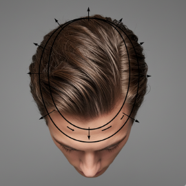
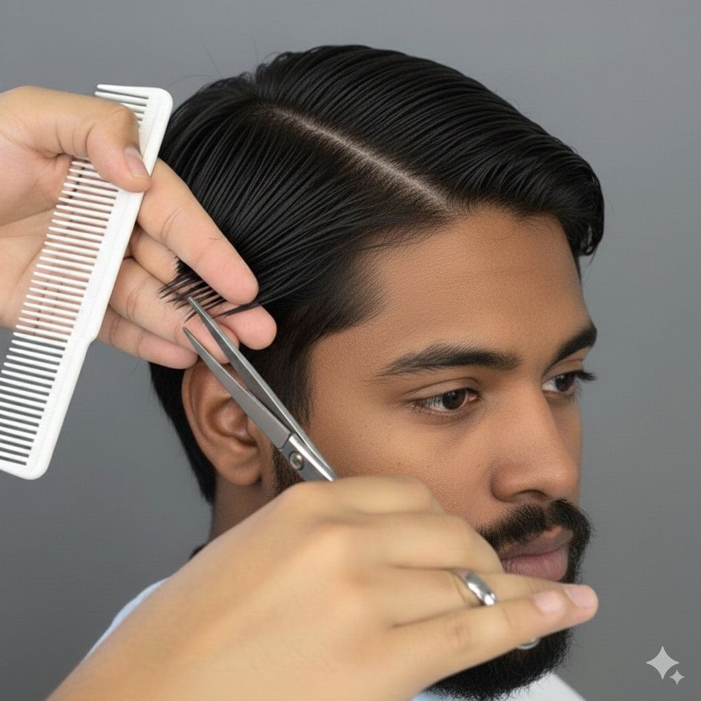
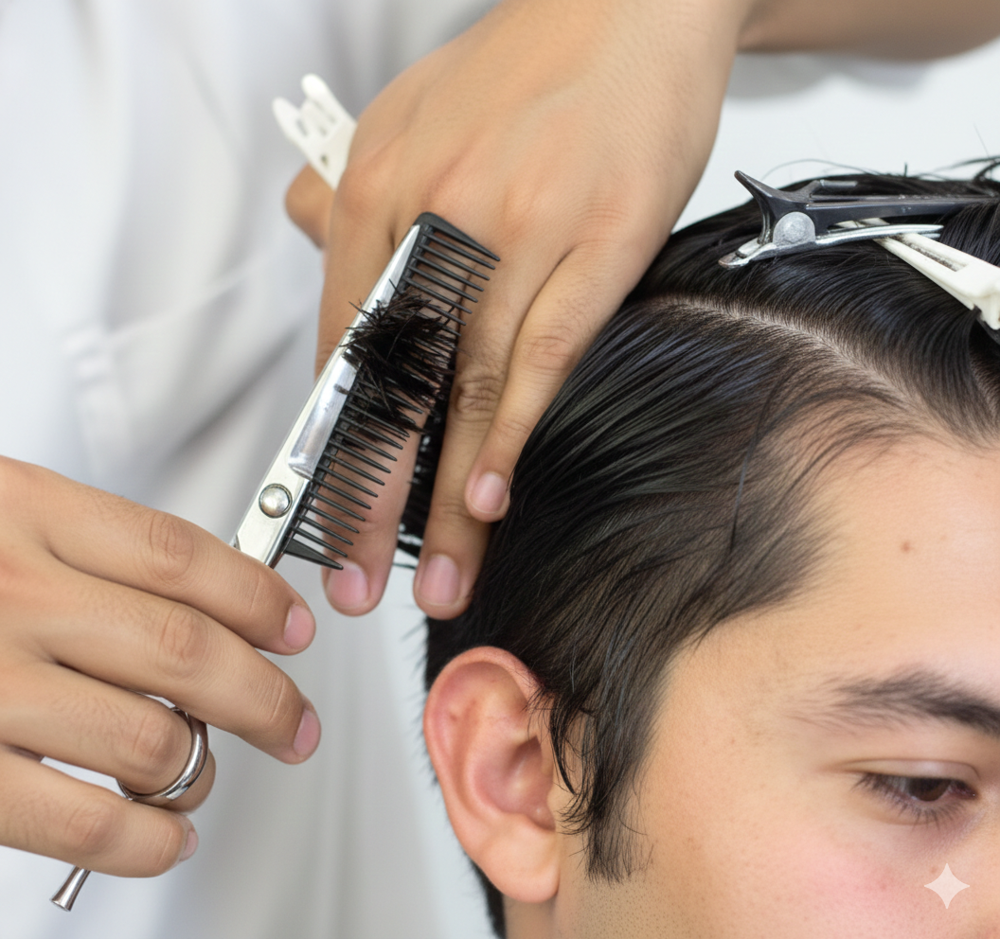
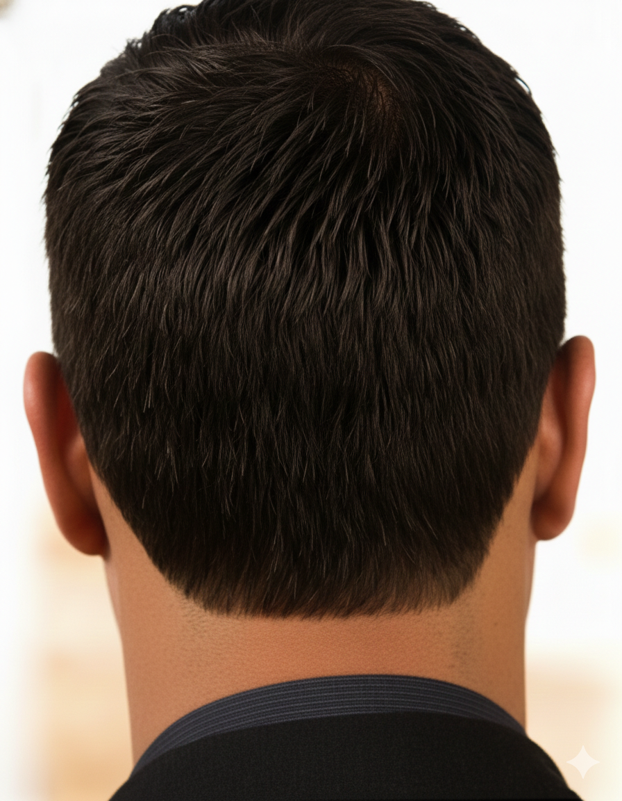
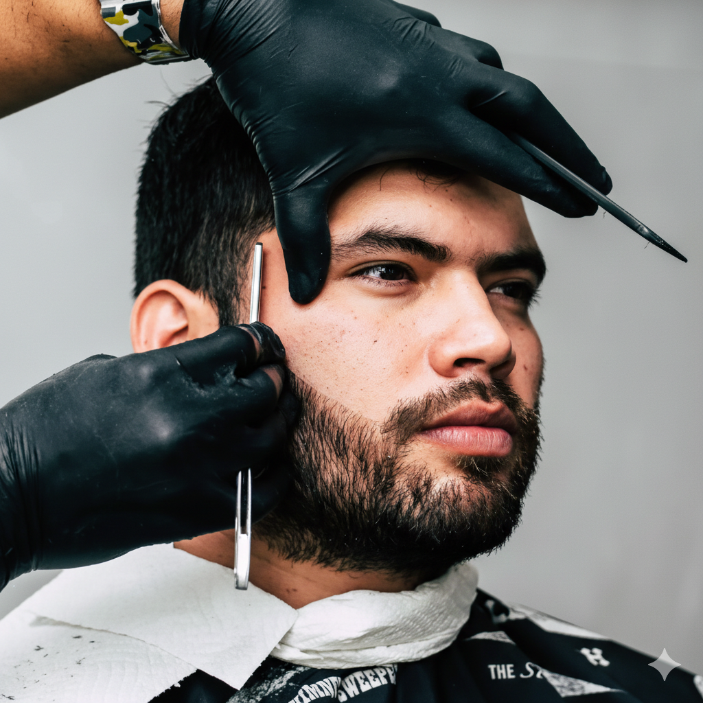

Clase 2: Corte a tijera, barba y uso de navaja
Clase 2: Barba y Corte a Tijera
Divisiones: La Base del Corte a Tijera
Un corte clásico a tijera exitoso comienza con divisiones precisas. El objetivo es separar claramente la zona superior del cabello de los laterales y la nuca.
- Paso 1: Con el peine, traza una línea desde el remolino hacia un lateral para marcar la primera división. Repite el proceso en el lado contrario.
- Paso 2: Extiende esa línea desde el lateral hasta el inicio de la entrada frontal. Haz lo mismo en el otro lado. Al finalizar, habrás creado una "herradura" bien definida, que será tu guía de trabajo.

Técnica de Corte Horizontal
Una vez definidas las divisiones, es momento de crear tu primera mecha guía. Realiza un corte horizontal a la altura del hueso parietal y temporal. Este corte inicial servirá como referencia de longitud para los laterales y la parte trasera.

Técnica de Corte Vertical
Para integrar y unificar las secciones, se utiliza el corte vertical. Esta técnica conecta el cabello de la parte superior con el de la inferior, eliminando cualquier escalón. Aplica este método por todo el contorno del cráneo hasta que el corte se vea completamente parejo y cohesionado.

Definición de Contornos
Los contornos son el marco del corte. Para un estilo clásico, ya sea a máquina o a tijera, puedes optar por dos acabados:
- Cuadrado o Recto: Aporta un look más definido y masculino.
- Redondo: Ofrece un acabado más suave y natural.
Utiliza siempre la patillera (trimmer) para esta tarea, ya que garantiza la máxima precisión.

El Arte de Perfilar la Barba
- Perfilado Curvo: Para lograrlo, estira suavemente la piel del pómulo y desliza la navaja en una línea recta. Cuando la piel vuelva a su posición natural, la línea se transformará en una curva elegante.
- Perfilado Recto: En este caso, no es necesario estirar tanto la piel. El objetivo es seguir la línea natural de la barba para mantener una perspectiva limpia y definida.
